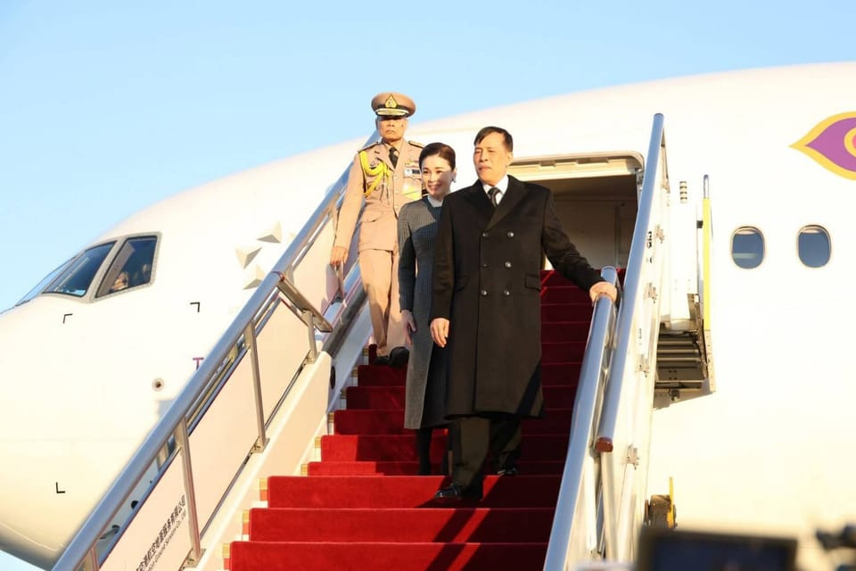

世界苦茶11月14日新闻 | 42条 | 董郁玉间谍罪上诉被驳

董郁玉间谍罪上诉被驳 | 泰国国王首次正式访华 | 10月经济数据低迷 | 中国对日本提出军事反击
苦茶数据
美元兑人民币：7.09（昨日7.09，前日7.12）
美元兑日元：154.48（昨日154.45，前日154.64）
上证指数：4018（昨日4029，前日3995)
标普500指数：6737（昨日6810，前日6846）
比特币：97264（昨日102956，前日103389）
布伦特原油：64.06（昨日63.24，前日64.94）
中国新闻
• 因间谍罪获刑七年 《光明日报》资深编辑董郁玉上诉被驳回。
中国官媒《光明日报》原评论部副主任董郁玉去年因间谍罪获刑七年，他随后提出的上诉在星期四被法院驳回，维持原判。家属坚称董郁玉无罪，批评法院判决是“迫害行为”。据路透社报道，董郁玉的儿子董一夫称，法院没有说明驳回上诉的理由。辩护律师莫少平则说，判决“不合逻辑，也没有任何证据能支撑间谍罪指控”。现年62岁的董郁玉曾在《光明日报》任编辑和记者，2022年2月在北京与一名日本外交官共进午餐时被捕，去年11月因间谍罪获刑七年。家属对庭审中出示的部分证据提出质疑。他们在声明中指出，董郁玉在中国接触过的几名日本外交官并非指控中所称的间谍，也从未被中国驱逐出境。
• 泰国国王首次正式访问中国，中国隆重接待。
中国称这是这位自2016年登基以来“首次访问的主要国家” 中国为泰国国王玛哈·哇集拉隆功在其首次正式访华铺设了红毯，此行旨在纪念两国建交50周年。国王于周四下午抵达中国首都，受到中国外长王毅的迎接。中国外交部表示，此次由中国国家主席习近平发出邀请的国事访问，使中国成为自2016年登基以来泰国国王“首个正式访问的主要国家”。泰国政府周日表示，此次访问将“进一步加强两国之间持久的友谊”。泰国皇室办公室称，此行也将增进“两国人民之间的友好与相互理解”。周五，国王与王后素提达计划在人民大会堂会见习近平及其夫人彭丽媛。
• 熊仔在行动：香港立法会选举前夕的国安教育。
2025年11月13日即将于12月7日举行的立法会选举，是北京在2021年全面改革香港选举制度以来的第二场立法会换届选举。法新社记者发现，在候选人不再进行激烈辩论的同时，国安法也以舞台剧形式“从娃娃抓起”。香港近日通过精心编排的舞台剧，向市民传递来自北京的两大政治讯息：在即将于12月7日举行的立法会选举中，应投票支持“爱国者”，以及不要“危害国家安全”。周二，超过一百名12岁以下的小学生在香港大会堂剧院中观看演出。舞台上一名头戴泰迪熊头饰的女子提醒孩子们，千万不能泄露国家机密。这是香港保安局发起的一项新宣传活动的一部分。
• 美国邀请台湾国民党主席赴华盛顿，强调首要任务是“避免战争”。
实际大使雷蒙德·格林在习近平与特朗普在釜山峰会两周后会见反对党新党主席。实际代表美方在台机构的负责人已邀请新任国民党主席郑丽文访问美国，并强调避免战争是首要任务。根据台湾最大反对党的一份声明，来自美国在台协会上任处长雷蒙德·格林的邀请，是在周三于国民党总部台北市面会时提出的。国民党被视为比执政的民进党对北京更友好，和该岛的另一个反对党——台湾民众党——在立法院占据微弱多数。“美国从未寻求台湾海峡的冲突。首要目标是避免战争。
• 北京誓言，如果日本在台湾海峡动用军事力量，将予以反击。
北京誓言若日本在台湾海峡动用武力将予以反击 这一警告是在日本首相高市早苗表示若发生涉台冲突，日本可视为“威胁生存的局面”之后做出的。中国外交部周四发表上述评论——此前数日北京已就高市早苗上周称若发生两岸冲突日本可能动用军队一事提出抗议。外交部发言人林建表示：“如果日本敢在台湾海峡动用军事力量进行干预，那将构成侵略行为，中国将予以强力反击。我们将坚决行使《联合国宪章》和国际法赋予的自卫权，坚定维护国家主权和领土完整。
• 影像显示中国正在建造首艘核动力航母。
在福建下水数日后，图像显示中国首艘核动力航母可能正在建造中 War Zone 报道称，大连正在建造的004型舰体显示出疑似反应堆安全壳的结构 该报道援引带有照片的社交媒体帖文和004型在建的卫星影像，称舰体呈现出看起来像反应堆安全壳的结构，这是推进系统的“关键指标”。“毫无疑问，这一结构在总体上与美国核动力超级航母上的结构相似，普遍共识是我们在此处看到的与未来安装核反应堆有关，”报道写道。尽管报道未排除该舰可能为试验船或模块的可能性，但这些影像是中国下一艘航母可能由核能推进的首批外部迹象之一。上周国家电视台央视引用一位中国专家的话也曾提出北京将来可能建造核动力航母的可能性。
印太新闻
• 中国扬言追捕台立委 沈伯洋现身德国联邦议会。
中国扬言追捕台立委 沈伯洋现身德国联邦议会 2025年11月13日被中国威胁全球追缉的台湾立委沈伯洋12日出席德国国会听证会，谈假信息与认知作战。对于台湾陆委会指控北京此举是对台湾民众的“集体胁迫”，国台办强调追捕行动只针对极少数台独顽固分子。中国重庆公安日前将台湾立委沈伯洋认定为“台独顽固分子”并立案侦查，中国官媒央视上周日更释出7分钟“起底台独沈伯洋”影片，威胁将全球追捕沈伯洋。沈伯洋为台湾民进党籍不分区立法委员，三年前成立民间组织“黑熊学院”，推广全民防卫相关的公共议题讨论、国情分析等。
• 台风“凤凰”来势汹汹 台湾疏散近6200人。
台风“凤凰”预计星期三在台湾西南沿海登陆，但登陆前已对台湾东部带来强大雨量，有村落遭泥流冲击，因应9月水灾搭建的便道也因溪水暴涨而淹没。截至星期二晚间，全台累计疏散撤离近6200人。在菲律宾造成18人死亡的台风“凤凰”，预计星期三傍晚到晚间，在接近台湾西南沿海的高雄、屏东一带登陆，之后持续往东北方向前进贯穿台湾本岛，预计星期四清晨从台湾东部台东一带出海。台湾交通部中央气象署星期二观测到，“凤凰”强度有持续减弱缩小的趋势，预计登陆到出海期间，受地形破坏影响，可能迅速减弱为热带低气压，后续朝东北离开，转变为温带气旋。
• 美国邀请台湾国民党主席赴华盛顿，强调首要任务是“避免战争”。
美国邀请国民党主席郑丽文访美，强调首要任务是“避免战争” 实际驻台大使雷蒙德·格林在习近平与特朗普釜山峰会两周后会见反对党新主席。根据台湾最大反对党国民党的声明，位于美国在台协会的主任雷蒙德·格林在周三于国民党台北总部的面对面会谈中发出了这一邀请。与执政的民主进步党相比，国民党被视为对北京较为友好——该党与岛上另一个反对党台湾民众党在立法机构中仅占微弱多数。“美国从未寻求在台海引发冲突。首要目标是避免战争，确保任何两岸分歧都通过和平方式。
• 马来西亚饶舌歌手Namewee在针对台湾网红谋杀案的调查中获保释。
马来西亚吉隆坡——著名华裔马来西亚说唱歌手兼电影人黄明志周四在被警方扣留协助调查一名台湾社交媒体网红遇害案一周后获警方保释。42岁的黄明志，艺名Namewee，其律师约书亚·郑表示，他须于11月26日向警方报到。警方称，黄明志是最后一位被看到与谢郁芯在一起的人。谢郁芯这名台湾网红于10月22日在吉隆坡一家酒店的浴缸中被发现死亡。警方上周已将她的死因重新定性为谋杀。现年31岁的谢郁芯在Instagram上拥有50万粉丝，并经营OnlyFans账号。黄明志上周三向警方自首。他此前也曾因涉嫌持有和使用毒品被指控，但他否认这些指控。
• 日本政府将商讨提高离境税至3倍以上。
日本经济新闻日前获悉，日本政府内部存在将现行每人1000日元的国际观光旅客税提高至3倍以上的方案。随着访日外国游客的增加，将把税收用于应对过度旅游。关于该方案，将与执政党的税制调查会等协商，力争年底前得出结论。收入的一部分还考虑用于降低日本人取得护照时的手续费。离境税不论日本人还是外国人，在离开日本时都必须缴纳。通过加在飞机票和船票的价格上征收。2024年度这笔税收达到524亿日元，创历史新高。关于提高离境税，日本自民党内部也有支援的论调。不过，增税有可能对日本人的海外旅行的趋势产生负面影响。
• 韩国作战指挥权移交是否为时过早。
美国在战时状态有权指挥韩国军队——但华盛顿似乎想要放弃这一职责。首尔是否真的准备好全面掌控本国军队？在过去75年中，美国一直掌握着韩国军队的战时作战指挥权。这一安排源于1950年爆发的朝鲜战争，并在1953年停战后延续至今。简单来说，只要没有爆发公开冲突，韩国就能指挥本国部队；但一旦战事升级，仍由华盛顿接管指挥权。曾有计划在2015年实现战时指挥权的移交。然而，在截止日期前，美国与韩国同意将移交与若干条件挂钩，以确保首尔有能力应对来自平壤日益增长的威胁。美国国防部长皮特·赫格塞斯最近的访韩再次强化了这一议题。
科技新闻
• OpenAI 和微软与州执法机构联手成立人工智能安全工作组。
人工智能在从家庭作业到工作甚至浪漫伴侣等各方面扮演着越来越重要的角色——而在确保这项技术被安全开发和使用方面，监督并不多。现在，两位州检察长联手两家最大的科技公司要改变这种状况。北卡罗来纳州总检察长，民主党人杰夫·杰克逊和犹他州总检察长，共和党人德里克·布朗周一宣布成立“人工智能工作组”。OpenAI 和微软已加入该行动，检察长们预计其他州监管机构和 AI 公司也将加入。该小组将制定 AI 开发者应实施的“基本保障”以防止对用户，特别是儿童造成伤害，并在技术发展过程中识别新风险。联邦层面没有统一的 AI 监管法律。
• 欧盟准备将具有里程碑意义的人工智能法规推迟一年。
据两名委员会官员称，欧盟委员会预计将提议推迟其一项里程碑式人工智能法规的关键部分。根据下周将提出的一项提案，针对可能危及人们安全、健康或基本权利的高风险人工智能的相关规定的实施将至少延迟一年。美国政府、美国科技公司和游说团体对欧盟施加了巨大压力，要求不要对人工智能进行过度监管。他们一直是呼吁对欧盟这部旗舰人工智能法案部分“暂停”的最积极的声音之一。
• PC游戏巨头Valve推出新主机，竞争Xbox和PlayStation。
开发并运营PC游戏平台Steam的Valve公布了一款全新主机，意在与任天堂、微软Xbox和索尼PlayStation竞争。该款名为Steam Machine的家用主机旨在让玩家在电视上游玩PC游戏——同时也可作为一台电脑使用。这是对2014年同名设备的精神延续。2014年那代产品未能打入由三大游戏厂商主导的市场，当时的起售价为499美元——而Valve这次的产品预计售价要高出不少。Valve表示，Steam Machine将于2026年初上市，具体定价尚未公布，更多细节将在临近发售时公布，目前确切发布日期亦未确定。
经济新闻
• 中国三季度经济数据出炉。
中国10月社会商品零售41092亿元、同比增2.8%，餐饮收入5199亿元、同比增3.8%。10月规上工业增加值同比增4.9%、环比增0.17%，坏于预期。上述二项增速都是2024年8月以来新低。1至10月固定资产投资同比减少1.7%，扣除房地产后为增长1.7%。其中，外企固定资产投资减12.1%。坏于预期。10月末商品房待售75606万平、同比增3.3%，其中住宅39645万平、同比增5.4%。10月城镇调查失业率5.1%。10月CPI同比涨0.2%、环比涨0.2%，PPI同比跌2.7%、环比涨0.1%。
• 中国出台13项政策措施促进民间投资。
中国政府出台13项针对性政策措施，包括进一步开放民间投资由国有资本主导的行业，引导民间资本参与低空经济领域基础建设，以及加大政府向中小企业采购力度，以促进和鼓励民间投资。中国国务院办公厅星期一印发《关于进一步促进民间投资发展的若干措施》的通知。其中，针对须要国家审批或核准且具一定收益的铁路、核电、水电、跨省跨区直流输电通道、油气管道、进口液化天然气接收和储运设施、供水等领域项目，探讨民间资本参与的可行性，并对具备条件的项目，允许民间资本持股比例增加至10%以上。彭博社指出，中国民间投资面临的限制，比国有企业更严格。
• 安世争端持续 欧洲车企或面临芯片短缺。
尽管中国同意放松出口限制，欧洲车企及其他工业企业仍面临毁灭性芯片短缺，可能导致全球生产线在几周内停产。汽车行业高管表示，芯片制造商安世半导体的荷兰子公司近来一直没有向已宣布脱离该集团的中国子公司供应晶圆。该公司在英国、荷兰和德国生产关键组件，但要运往中国子公司进行封装，然后再出口。中国政府近日放松出口禁令后，已经有数批安世芯片恢复发运。但另一位欧洲车企高管说，行业形势仍然极其挑战性，因为现在问题源于安世荷兰子公司与中国业务间的敌对关系。车企高管称，虽然安世中国工厂还有一些晶圆库存，但如果没有晶圆从德国和欧盟发出，库存就会耗尽。
• 中芯预计内存短缺将在明年影响汽车和手机。
中芯国际警告表示，内存短缺可能会在2026年限制汽车和消费电子产品的生产。中芯国际联合首席执行官赵海军表示，中国企业对向中芯国际下达明年年初的订单变得更为谨慎，因为他们不确定能否为产品获得足够的所需内存。部分不确定性源于预计内存价格将飙升，这反映出人工智能相关应用的强劲需求。中芯国际赵海军在周五财报电话会议上向分析师表示：“不论是汽车制造商、智能手机，还是消费电子领域，所有使用内存的企业明年都将面临价格上涨和供应紧张的压力。我们的客户不愿意在第一季度下太多订单，因为他们不确定能获得多少内存芯片。”
• 墨西哥认定中国橡胶产品存在倾销，拟征收永久性反倾销税。
墨西哥认定中国橡胶存在倾销，拟征永久性关税 墨西哥表示，大量低价中国橡胶涌入削弱了该国唯一的生产商，此时贸易流向的变化正引发与北京的新摩擦。墨西哥对中国进口的特种合成橡胶实施了永久性关税，称这种用于多种产品的材料的大量低价出货削弱了其国内唯一的生产企业，并在政府加强贸易防御以保护本地产业、应对与北京日益加剧的摩擦之际采取了此举。经贸部表示，苯乙烯–丁二烯–苯乙烯嵌段共聚物将面临每公斤0.8324美元的定额关税。
• “合规迷宫”：欧盟对华为、中兴和Shein的审查升级，令中国企业面临更大赌注。
分析人士表示，随着欧盟可能对两家标志性高科技供应商采取更严厉措施、法国威胁暂停快时尚零售商Shein，以及此前没收中国控股芯片制造商Nexperia之后，中国企业在“合规迷宫”中的利害关系将上升。在欧盟运营的公司可能面临监管成本、政治风险和供应链暴露，且可能正在制定应急计划。独立中国经济学家谢安迪表示：“如今欧洲对中国大为紧张。继Nexperia事件之后，接二连三地出现问题。”专家称，欧盟委员会据报拟要求成员国逐步淘汰华为和中兴的电信设备，这既可能成为新的监管障碍，也会对大约3000家在欧洲经营的中国公司发出警示。
• 在内蒙古十年规划推动下，包头将成为中国稀土中心。
拥有全球最大稀土矿的北方省区正着力将其第二大城市包头打造成关键材料的世界级枢纽。分析人士表示，这一举措可能进一步巩固中国在供应链中的领先地位。内蒙古自治区在一份为期十年的发展规划中提出，要建设“坚实的生态安全屏障”，全面推进关键矿产的保护与综合利用，启动新一轮战略性矿产勘查，加快高端稀土功能材料的发展。该规划于周三发布，覆盖至2035年，提出优化关键矿产的应用结构与空间布局，提高资源利用效率。
• 因财政压力，中国加紧对公民海外收入的税务审查。
分析人士称更严格执法可缓解财政紧张 至少六个税务机关——包括深圳、北京、厦门市级税务局，以及广东、福建、四川省级税务局——表示已利用大数据分析甄别出未申报海外收入的个人，并提醒纳税人依法申报。各地也披露了若干违规案例。厦门一名姓付的纳税人被责令补缴近700万元人民币的欠税和罚款；四川一名姓李的纳税人被迫补缴近670万元；广东一名姓刘的纳税人被要求缴纳170万元；福建另一名纳税人被责令补缴约560万元。
• 腾讯公布第三季度利润增长19%，受益于人工智能业务，超出预期。
腾讯发布第三季度利润同比增长19%，得益于与人工智能相关的收益，超出预期 总部位于深圳的科技巨头在加大人工智能投入的同时，研发效率提升超过20%。中国科技公司腾讯控股——国内市值最高的科技巨头——第三季度收入同比增长15%，超出分析师预期，其人工智能工作继续推动增长。这家总部位于深圳、运营中国最受欢迎的超级应用微信的公司的收入达到1929亿元人民币，高于去年同期的1672亿元。九月季度净利润增长19%，达到631亿元。
• 德国希望利用回收关键矿物来降低对华依赖，但发现这样也很难和中国竞争。
日经亚洲报道说，德国正努力推动关键矿物和稀土的回收，以减少对中国的依赖，但即便在这个领域，依然难以匹敌中国的竞争。业内警告说，德国有一百万个就业岗位依赖这个领域。弗赖贝格化合物材料公司是生产微电子和光电子用化合物半导体衬底的企业。这个公司的回收试点项目可能会让行业稍微缓一口气。专家说，如果政府和国内产业能提供足够支持，就有希望。弗赖贝格化合物材料公司最近建立试点工厂。这个工厂每天会处理五百升废水，用类似病毒的有机分子，高效提取并浓缩极微量的镓。镓是中国严格出口管制的金属之一，在先进电子设备和国防工业中不可替代。
• 金·卡戴珊的塑形内衣品牌Skims估值达到50亿美元。
金·卡戴珊联合创办的塑形内衣品牌Skims在完成2.25亿美元新一轮融资后，估值升至50亿美元。公司表示，将利用包括高盛旗下机构在内的投资者资金开设更多门店并在全球扩张。卡戴珊周三表示：“我们迫不及待要将Skims带到新的高度，继续创新并为行业设定标准。” 这轮融资是今年美国消费品牌中规模最大的之一，正值Skims面临如Lululemon等竞争对手的激烈竞争之际。Skims在美国经营18家门店，并通过全球零售商销售产品，公司声明称未来几年将“主要”聚焦实体零售业务。
• 巴西牛肉对华出口大增，弥补美国关税影响。
尽管美国对巴西牛肉征收全球最高的50%关税，巴西10月对美牛肉出口减半，但得益于对华出口等的增长，牛肉出口总量仍创下历史新高。巴西借美国川普政府关税政策之机，以食品供应国的身份推行积极的出口战略，抢占全球市场需求。巴西牛肉出口商协会依据政府统计数据整理的资讯显示，10月巴西牛肉出口量约为35.7万吨，比上年同期增长19%。比创下1997年开始统计以来历史最高的9月出口量进一步增长2%。按金额来看同样实现大幅增长，比上年同期增长40%，单月牛肉出口额达到19亿美元左右。
• 加拿大总理将公布新一批重大采矿和能源项目。
据BNN报道，加拿大总理卡尼将在周四公布第二阶段重大项目，将包括不列颠哥伦比亚省的Ksi Lisims液化天然气项目，安大略省的克劳福德镍项目，新不伦瑞克省的西森矿，以及位于努纳武特地区伊魁特的水电开发。卡尼早先表示，他的政府将加快推进重大项目，并会在11月16日“灰杯”之前公布下一批项目。重大项目办公室在八月启动。前Trans Mountain公司首席执行官兼董事会主席唐·法雷尔负责领导。这个办公室用来简化并加快推荐项目的监管审批，同时推动这些正在研究中的项目。
• 中国光伏产业誓言“战斗到底”，抵制恶性竞争。
中国光伏行业誓言“战到最后”遏制恶性竞争 寻求从恶性和不公平竞争中牟利的公司被警告“早晚会失败” 中国光伏行业协会誓言将“战到最后”以遏制由产能过剩驱动的恶性竞争，承诺通过行业自律恢复公平的市场秩序。“不要低估政策背后的决心，”中国光伏行业协会执行秘书长刘怡洋在其私人微信朋友圈的一则帖子中表示，界面新闻报道。“我们将战到最后，将光伏行业从恶性竞争中引导出来，”他称，“我有信心我们的努力会取得成功。” 刘表示，中国光伏行业正在从供给侧和需求侧着手，淘汰落后产能，恢复公平的市场竞争，并警告那些不自律、试图从恶性和不公平竞争中牟利的公司“迟早会失败”。
俄乌战争
• 俄罗斯首次发行人民币计价国债。
俄罗斯财政部11月12日宣布，将首次在俄罗斯发行以人民币计价的国内债券。在乌克兰问题长期化导致财政赤字扩大的背景下，俄政府正寻求向通过对中国能源出口而持有大量人民币的企业等筹措资金。12月8日将发行偿还期限为3～7年的国债。发行额将根据12月2日启动的需求调查决定。路透社援引多名市场相关人士的话报导称，俄罗斯计划最多发行4000亿卢布。发行的国债可以用人民币和俄罗斯货币卢布购买。由于在作为美国制裁对象的莫斯科证券交易所交易。
• 据消息人士称，泽连斯基将于周末访问希腊并签署能源协议。
基辅独立报11月13日援引一位接近总统办公室的消息人士称，泽连斯基总统预计将在周末访问希腊，签署一项能源领域协议。此前希腊报纸《卡蒂梅里尼》报道称，泽连斯基计划在11月16日进行为期一天的访问，届时将与希腊议会议长康斯坦丁诺斯·塔苏拉斯和总理基里亚科斯·密佐塔基斯等高级政府和议会官员会面。如果得到证实，此次行程将是自俄罗斯全面开战以来泽连斯基第二次访问雅典。泽连斯基此前曾于2023年8月在一次与欧盟领导人的集体晚宴期间访问过希腊首都。据报道，该协议拟在乌克兰城市持续遭受俄罗斯对能源基础设施打击之际签署，俄罗斯试图再次将该国逼入严冬。
• 梅尔茨告诉泽连斯基，乌克兰男性应留在国内参战。
德国总理弗里德里希·梅尔茨敦促乌克兰总统弗拉基米尔·泽连斯基遏制大量乌克兰年轻男性前往德国的流动，确保他们留在国内保卫国家。“在今天的一次长时间电话交谈中，我要求乌克兰总统特别确保乌克兰的年轻男性不要大量——并且是越来越多地——来到德国，而是为自己的国家服役，”梅尔茨周四表示。
• 鲁比奥：我们对俄罗斯可制裁的对象快耗尽了。
美国高级外交官马可·鲁比奥周三深夜表示，在上个月重击克里姆林宫最大的石油巨头后，美国可用于制裁俄罗斯的选项已所剩无几。“我们这边没剩下多少可制裁的了，我是说，我们已经打击了他们的主要石油公司，这正是大家一直在要求的，”鲁比奥在出席七国集团外长会议前说。上个月，美国对俄罗斯石油公司和卢克石油及其子公司实施了制裁，旨在减少俄罗斯的石油收入——其为对乌克兰战争的主要资金来源——并推动莫斯科回到谈判桌上，以期结束克里姆林宫的侵略。
• 冯德莱恩建议把欧盟共同举债作为为乌克兰融资的备用方案。
欧盟委员会主席乌尔苏拉·冯德莱恩周四表示，如果将冻结的俄罗斯资产移交的计划没有进展，欧盟可能会共同借款资助乌克兰。在向欧洲议会的演讲中，冯德莱恩首次公开列出未来几年为乌克兰战争行动筹资的不同方案。委员会希望利用欧洲持有的俄罗斯国家资产来支撑一项1400亿欧元的赔偿贷款给乌克兰。但这一构想遭到比利时的反对，迫使欧盟执行机构提出替代方案。
世界新闻
• 特朗普政府将四个欧洲左翼网络列为恐怖组织。
特朗普政府将四个欧洲左翼网络列为恐怖组织 特朗普政府周四将四个欧洲左翼组织指定为恐怖组织，此举兑现了他在保守派活动人士查理·柯克遇刺后打击左翼分子的承诺。被特朗普共和党政府锁定的这些网络似乎都总部设在欧洲，在美国没有活动。它们包括：一个在2003年向当时的欧洲委员会主席寄送爆炸包裹的意大利无政府主义前线组织，两个被认为在雅典对防暴警察和劳工部门建筑投放炸弹的希腊网络，以及一个其成员因在德累斯顿用锤子攻击新纳粹而被德国当局起诉的反法西斯组织。多项研究指出，欧洲有长期的左翼政治暴力历史，而在美国，近几十年来政治暴力更常来自右翼。
• 尼日利亚取消小学母语教学，改回以英语授课。
尼日利亚取消小学母语教学政策，恢复英语授课 尼日利亚政府宣布取消一项有争议的政策，该政策要求在学前和早期小学阶段以本地语言代替英语进行教学。教育部长通吉·阿劳萨表示，这一仅在三年前推行的方案未能达到预期效果，将立即废止。取而代之的是，从学前教育到大学阶段恢复以英语为教学媒介。这项现已废止的计划由前教育部长阿达穆·阿达穆发起。他当时主张儿童用母语学习更有效，认为学生在“使用自己的母语”教学时更容易理解概念——这一观点也得到多项联合国关于早期儿童教育研究的支持。尼日利亚的教育体系正面临严重问题，如教学质量低下，教学材料不足，教师低薪以及频繁罢工。
• 欧洲议会通过了被削弱的2040年气候目标。
欧洲议会多数中间派和左翼议员周四通过了一项提案，设定欧盟新的具有约束力的气候目标，击败了极右翼阻止该提案的努力。该文本要求到2040年将导致地球变暖的排放量减少90%，基本上照搬了欧盟各国政府11月5日通过的立场。目标细分为：欧盟应将国内排放量较1990年减少85%，并且有争议地被允许通过购买国际碳减排抵消来将剩余的5个百分点转嫁到境外。
• 加州计划撤销发放给移民的1.7万份商业驾驶证。
加州计划撤销1.7万张发放给移民的商业驾驶执照 加州官员周三表示，该州计划撤销1.7万张发放给移民的商业驾驶执照，因为发现这些驾照的到期日晚于这些司机在美国合法停留的时间。此番声明是在特朗普政府严厉批评加州及其他州向非法入境者发放驾驶执照之后作出的。今年8月，一名无合法在美身份的拖挂卡车司机在佛罗里达实施非法掉头并引发车祸，造成三人死亡，此事将这一问题推上公众视野。交通部长肖恩·达菲周三表示，加州撤销这些驾照的行为等于承认该州此前虽为其辩护，但在出证上存在不当之处。在达菲提出关切后，加州启动了对所发放商业驾驶执照的审查。
• 德国执政党就兵役问题达成新协议。
在上个月一项早前政治协议被打乱后，德国执政党就改革兵役达成新的妥协。周三晚间，中右翼基督教民主党与中左翼社会民主党的高级议员敲定了这项新协议，标志着联合政府第二次尝试解决该国最具争议的国防改革之一。此前的草案在国防部长鲍里斯·皮斯托留斯出面制止依靠自动抽签触发以填补人手缺口的模式后宣告失败。此举引发了围绕德国在多大程度上应强制青年服役的更广泛辩论。
• 众议院投票通过拨款方案，结束史上最长的政府停摆。
美国有史以来最长的政府停摆宣告结束 特朗普总统签署拨款法案，结束了美国史上最长的政府停摆——这次停摆影响数百万美国人，但在政治上收效甚微。尽管众议院共和党议席优势微弱，该法案于周三晚间通过。停摆开始后第43天，有六名民主党人加入共和党同僚阵营，帮助法案过关：德州众议员亨利·库埃利亚、北卡罗来纳州众议员唐·戴维斯、加利福尼亚州众议员亚当·格雷、缅因州众议员贾里德·戈尔登、华盛顿州众议员玛丽·格鲁森坎普·佩雷斯和纽约州众议员汤姆·苏奥齐。两名共和党人——肯塔基州众议员托马斯·马西和佛罗里达州众议员格雷格·斯图布投了反对票。最终表决结果为222票赞成，209票反对。众议院投票后不久。
• 美国主教团正式禁止天主教医院提供性别肯定医疗。
美国主教周三正式投票禁止天主教医院为跨性别患者提供性别肯定性医疗。此举将多年就跨性别医疗问题在美国教会内部推进的程序予以正式化。在巴尔的摩一家酒店宴会厅，主教们以压倒性多数通过了对指导全国数千家天主教医疗机构和医疗提供者的伦理与宗教指令的修订。根据天主教健康协会的数据，美国每天有七分之一以上的患者在天主教医院接受治疗。在一些社区，天主教医院是唯一的医疗中心。主流医学团体和卫生组织支持为跨性别患者提供性别肯定性医疗。大多数天主教医疗机构采取保守做法，不提供可能包括激素。
• 孙雯“中国代理人”案开审，检察官称其“背叛”纽约州。
孙雯“中国代理人”案开审，检察官称其“背叛”纽约州 2024年7月，当联邦调查局特工突击搜查前纽约州两任州长助理孙雯位于长岛北岸价值350万美元的豪宅时，他们带走了一块劳力士手表、一枚钻戒，以及一辆法拉利Roma跑车。检察官表示，这些奢侈品是中国共产党给孙雯的报酬。孙雯在奥尔巴尼担任州长安德鲁·科莫和凯西·霍格尔的顾问和助手期间暗中执行中共的政治议程。如今，孙雯及其丈夫胡骁正在布鲁克林联邦地区法院受审。孙雯被控担任未注册的中国政府代理人，胡骁则被指控洗钱及其他罪行。这是联邦检察官指控中国政府试图影响美国政治的最新案件。